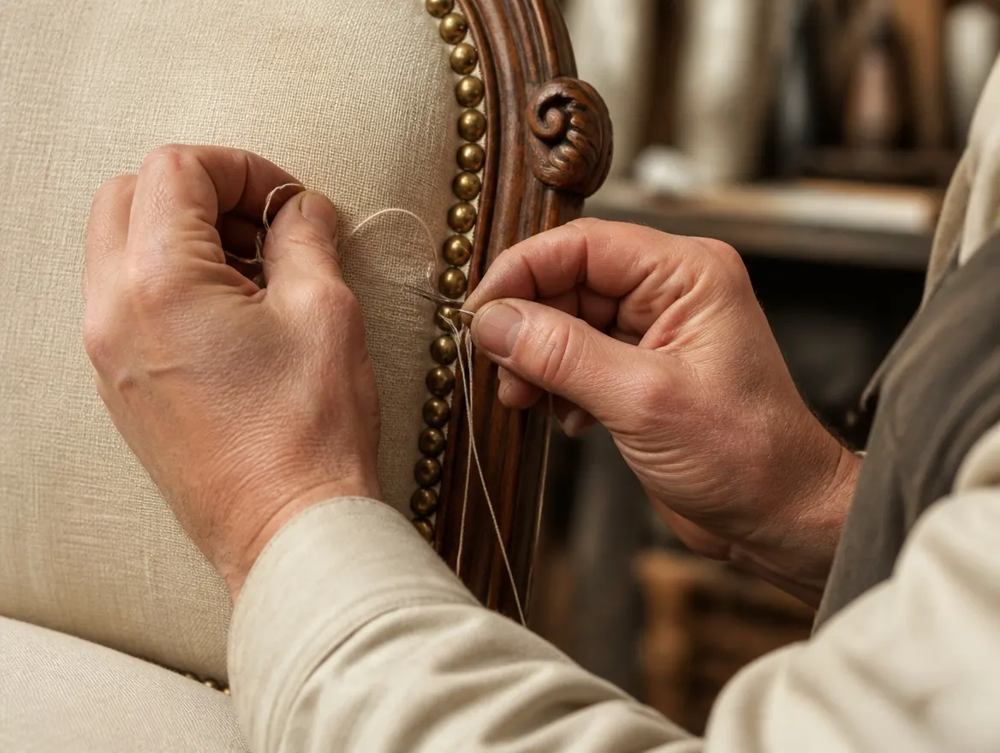
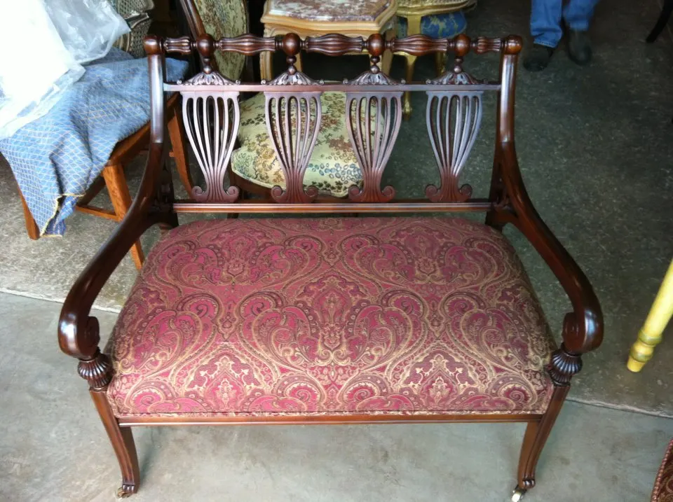
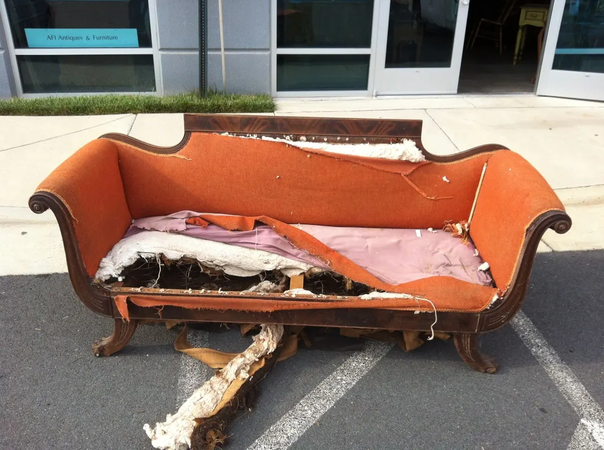
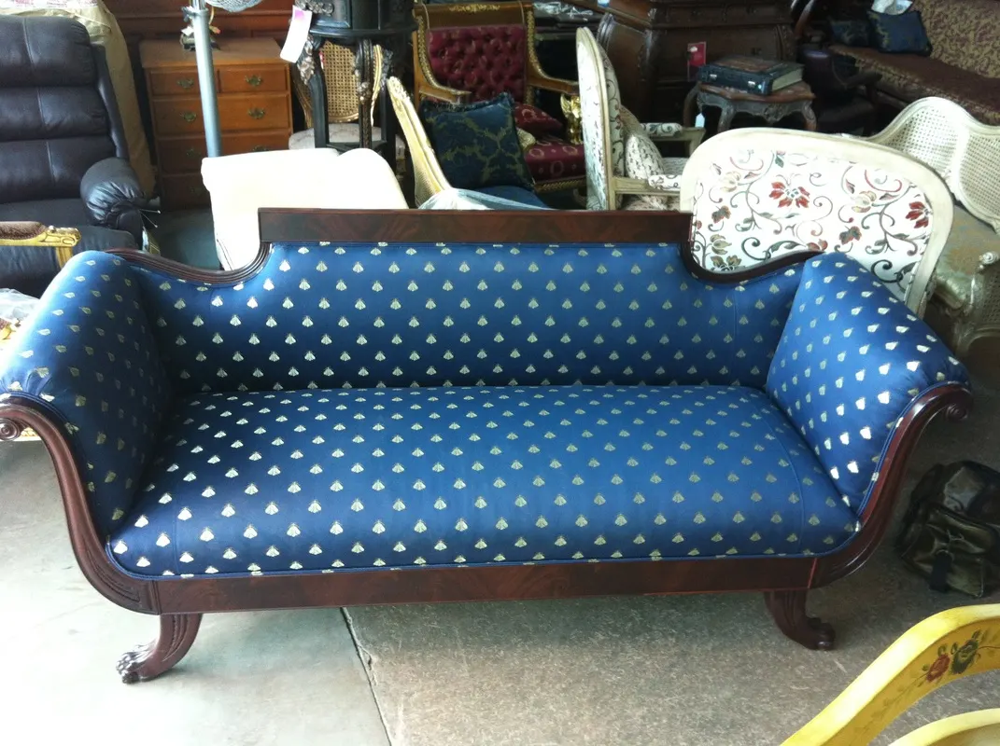
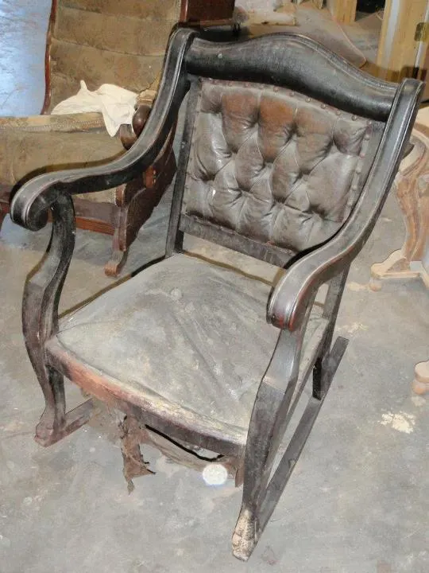
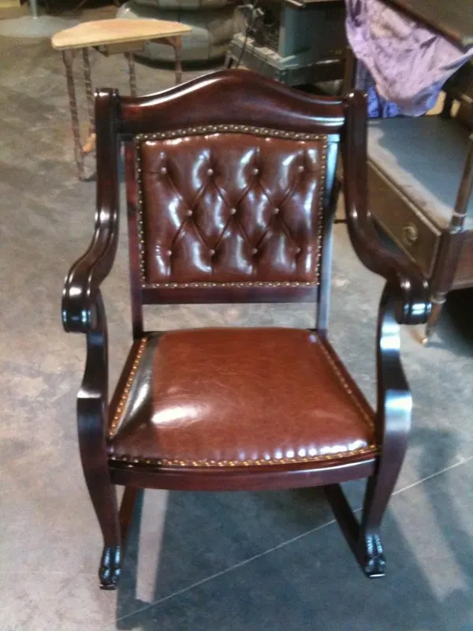

Guide No. 06 · Seating · From the bench
Reupholster, or buy new?
A sofa wears out from the top down. The fabric goes first, then the padding — and the frame underneath may be good for another fifty years, or not worth a single yard of new cloth. That difference decides everything. Here is how we read it, from a workroom serving Washington DC, Maryland and Virginia that turns down the pieces that don’t deserve the work.
What the price tag never says
You are buying a frame.
Every upholstered seat is a wooden structure wearing a jacket. In the showroom, the jacket is all you can see. At home, the frame is what you live with.
Most seating built before the 1960s was framed in solid hardwood, joined with mortise-and-tenon, with real weight to it. A frame like that was made to be re-covered — strip the old cloth and it takes webbing, padding and fabric again, the way a good roof takes new shingles. It has usually done so once or twice already.
Much of what sells today is not built that way. Particleboard, staples and photo-printed grain don’t take a second life the way wood does. When the cover wears through, there is nothing underneath worth covering again.
That is the whole question, and it is why our upholstery work begins at the wood. In our workroom the frame is repaired and refinished at the same bench that sews the cover — a loose joint re-glued, a cracked leg rebuilt, the show-wood hand polished, before a yard of new fabric goes on.

When reupholstery is the wrong call
Sometimes, buy the new sofa.
-
The frame was never really built
Turn a recent, mass-produced piece over and you will often find particleboard and staples where the rails should be. New fabric on a frame like that is a good coat on a bad foundation: the cover would outlive the piece. Our honest advice is usually to enjoy it, wear it out, and replace it without guilt.
-
You never loved the shape
Reupholstery keeps the bones. The silhouette, the seat height, the depth, the pitch of the back — all of it stays. If a chair has never once been comfortable, or the lines have never pleased you, new cloth will not change your mind. Fabric fixes fabric. It does not fix form.
-
The work would outrun the worth
When the cost of doing the job properly would outrun what the piece is worth to you — in the market or in the family — we say so in the estimate, before a dollar is spent. It costs us jobs, and it keeps our clients.
-
Nothing about it asks to be kept
A late piece with ordinary construction and no particular story may simply not repay the work. That is not a failing; most furniture is made to be used up. The pieces worth rebuilding announce themselves — in the joints, in the show-wood, in who sat there before you.
Fabric choice economics
The cloth is the biggest line.
On most reupholstery jobs, the fabric is the largest single line in the quote. The yardage is fixed by the shape of the piece; the grade of cloth is entirely your choice — and the range is wide.
That puts the number in your hands more than people expect. A settee takes the yards it takes, whether they are a sturdy workhorse weave or a silk damask. Bring the fabric you have already fallen for, or let us help you source one suited to the piece and the room.
What we will not do is save money underneath the cloth. The old cover comes off meticulously, down to the frame, so nothing tired is buried under the new work. Foam and padding are reinforced or replaced with premium-grade materials. Webbing and structure are rebuilt to last. The savings, when you want them, come out of the fabric grade — never out of the padding.
{kind=link}


Read it like we do
The frame test.
You don’t need our bench to get a first reading. Five minutes with the piece will tell you most of it.
- Lift one end. Solid hardwood has real weight to it. A frame that feels like nothing usually is.
- Look underneath. Tip the piece and read the rails. Solid wood is one answer; particleboard, staples and photo-printed grain are another.
- Rock it gently. A wobble means loose joints — which sounds fatal and rarely is. Failed glue joints are repairable in solid wood. That is repair work, not a death sentence.
- Read the show-wood. Carving, turned legs, a shaped arm — these are the piece’s handwriting, and no fabric change touches them.
- Weigh the story. A settee that has been in the family three generations has already earned its place. The only question left is craft, not worth.
Still unsure? A few photographs are enough — the whole piece, and the underside if you can manage it. We’ll tell you which case yours is.
Before & after
Frames that earned their keep.
{kind=link}

{kind=link}

Full reupholstery · Client’s fabric
The Empire scroll-arm sofa
Its cover was shredded past sitting on. The scroll-arm frame underneath was another matter — and once it was dressed in navy silk, the piece went home looking like nothing on a showroom floor, because nothing on a showroom floor is built like it.
{kind=link}

{kind=link}

Leather change · Traditional detail
The Empire rocker
Its leather had dried and split beyond saving. New hide was cut, fitted and button-tufted by hand, then finished with brass nailheads set one at a time — the detail the piece was born with. Try ordering that new.
Answered honestly
What clients ask.
Is reupholstery worth it, or should I just buy new?
It depends on the frame. Solid hardwood joined with mortise-and-tenon — the way most seating was built before the 1960s — was made to be re-covered, and can be rebuilt for another generation of use. A frame of particleboard and staples was not, and we will say so. Send photos; the reading is honest and the estimate is free.
Is it cheaper to reupholster a sofa than to buy a new one?
Not always — and we would rather say that plainly. The fabric is usually the largest single line in a reupholstery quote, and since the grade of cloth is entirely your choice, the number moves with it. What you are buying is also different: a solid hardwood frame, rebuilt underneath with premium padding, covered in exactly the fabric you chose. When the cost of the work would outrun what the piece is worth to you, we tell you in the estimate — before a dollar is spent.
Can you repair the frame too, or only replace the fabric?
Both, at the same bench. Most upholstery shops send woodwork out; most refinishers send fabric out. In our workroom a loose joint is re-glued, a cracked leg rebuilt and the show-wood hand polished before a single yard of new fabric goes on. Frame repair, refinishing and upholstery under one roof.
† Weighing a case piece instead of a seat? Start with Is it worth restoring? — and find the rest of these guides in The Workshop Journal.
Ask the bench before the showroom.
A few phone snapshots — the whole piece, the underside if you can — and we’ll tell you honestly whether the frame deserves new fabric or a graceful goodbye. No charge for the answer.